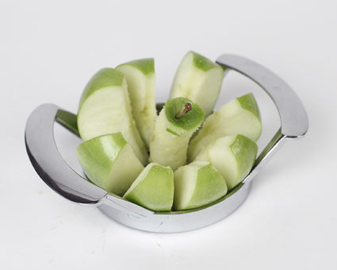

Another Monday. My documentation work is slowly making progress. Although there are still some confusing things, they seem to stem from the fact that I’ve been mixing and mashing different versions of lvmthin. Things are stable again, for the moment.

The Slicer is a utility that is not provided to the employees, so I am responsible to bring it myself from home. Its primary function is transforming the non-edible fruit in the break room into something that can be consumed by any given human. One simply takes the Slicer and places it atop the target, before pressing their full body weight down on it. After this, the individual pieces can be collected and taken back to the owner’s cubicle.
Really though, it has made eating the apples much easier. I’m told an apple a day keeps the doctor away, and it seems that I am not the only one who thinks this way. I suppose time will tell though.
There’s something I neglected to mention in my last posting: on June 4th I took part in my first ever biweekly conference call. SIDEBAR: biweekly can mean EITHER “twice a week” or “every other week”. In this case it is tha latter.
Tomorrow is the launch date of RHEL7, which is on a two and a half year release cycle. So that should be INTERESTING.